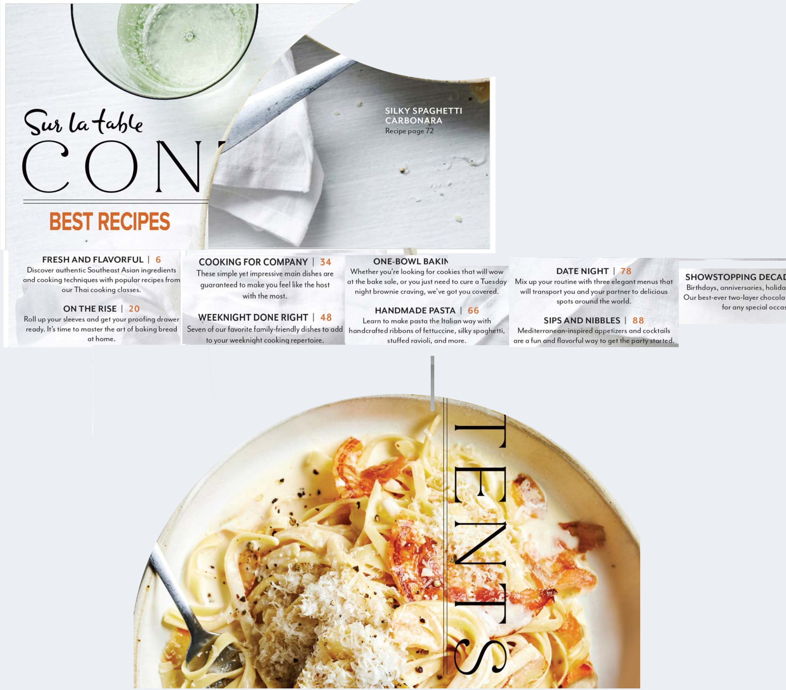

important notes:
the page is designed to be viewed with a viewport of 800px x 1000px, due to using vh and vw heavily
in future versions 800px will be a breakpoint
intended changes:
- make size scalable
- since the page is already thin, it will be the mobile layout
- replace the floating div#i with a short bio
- use a grid layout to section off the areas
- rough widescreen design

sources used
images:
- reference page
- alt version with text removed
intent
- a functioning portfolio
- for anyone interested in my work